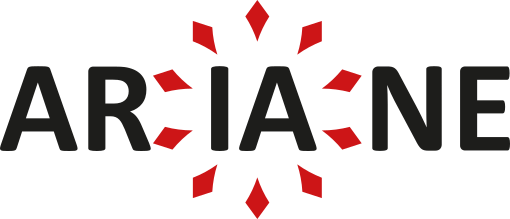

Un cadre sémantique développé par le groupe de travail « Métadonnées » du Consortium-HN ARIANE pour structurer l’organisation, la description et l’interopérabilité des métadonnées décrivant les corpus textuels.
🇫🇷 FrançaisA semantic framework developed by the “Metadata” working group of the Consortium-HN ARIANE to structure the organization, description, and interoperability of metadata describing textual corpora.
🇬🇧 EnglishUn marco semántico desarrollado por el grupo de trabajo «Metadatos» del Consorcio-HN ARIANE para estructurar la organización, la descripción y la interoperabilidad de los metadatos que describen los corpus textuales.
🇪🇸 Español